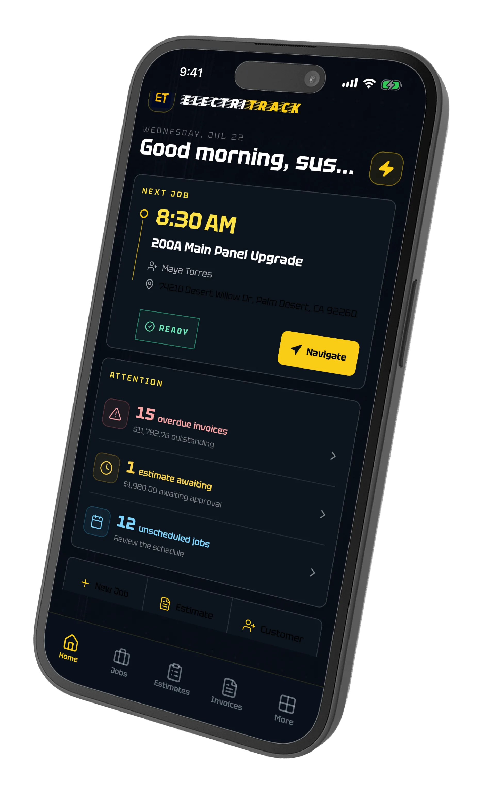
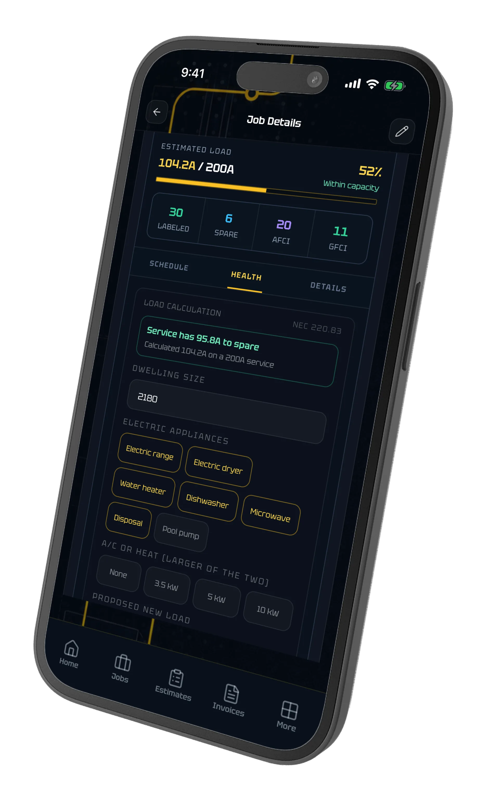
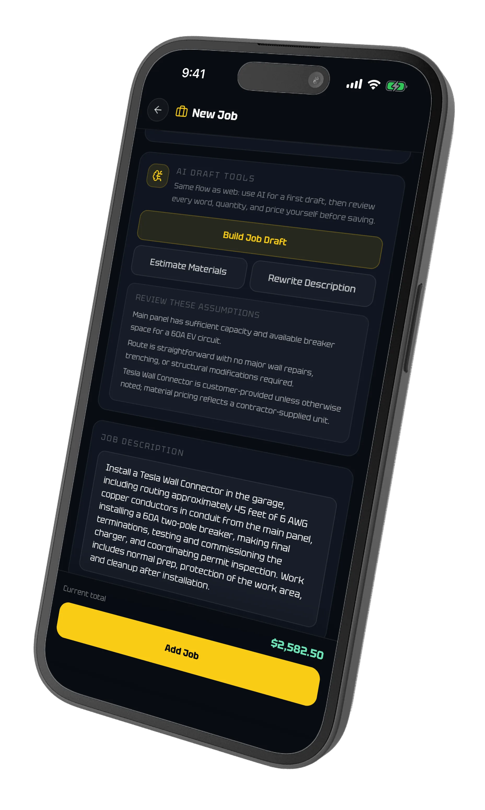
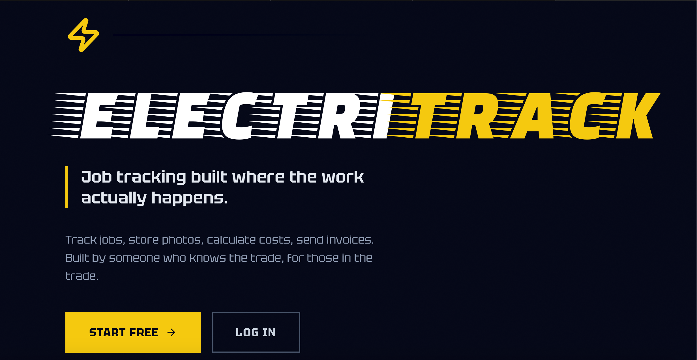
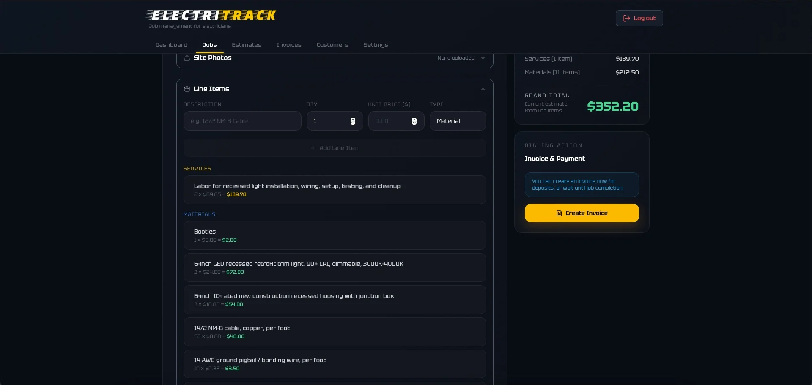
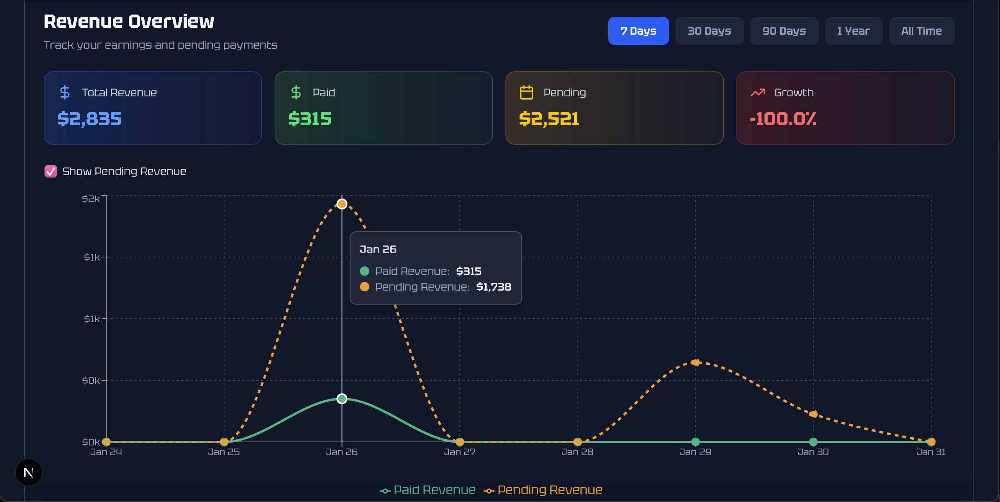

ElectriTrack
Field-first job management for electrical contractors.



Built from field work
ElectriTrack moves a small electrical shop from lead to estimate to job to invoice. I built it from firsthand experience in the trade, where contractor software often creates more office work than it removes.
The web app and iOS companion share a Firebase backend and domain helpers. Stripe Connect supports contractor payouts, while public links let customers approve estimates and pay invoices without creating an account.
- Public estimate approval and payment links
- Permit, inspection, and panel workflows
- Mobile job access for work in the field
- AI drafting with per-user daily limits
Panel to payment
The iOS companion carries the whole job from the truck: today's schedule, panel layouts, load math, estimates, and invoices, without a trip back to the office.


Back office on the web



Next project · In developmentMycrogrid Platform ↗